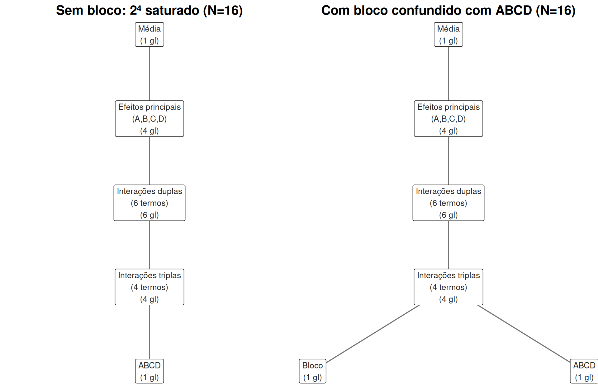

6.3 Confusão em \(2^k\): designação de tratamentos a blocos
Fatoriais \(2^k\) crescem rápido: um \(2^6\) já tem 64 tratamentos. Se uma única unidade de bloqueio (um lote de matéria-prima, um turno de operação, um dia) só comporta metade das corridas, o fatorial completo precisa ser dividido em blocos — e queremos que a divisão não contamine os efeitos que nos interessam. A técnica de confusão (do inglês confounding) escolhe deliberadamente um efeito de interação — normalmente de ordem alta, o que consideramos menos provável de ser grande e mais fácil de “sacrificar” — para ficar indistinguível do efeito de bloco.
6.3.1 Esquema de designação: o contraste definidor
Para dividir um \(2^k\) em 2 blocos de \(2^{k-1}\) corridas, escolhemos um efeito — o contraste definidor — e calculamos seu sinal (produto dos níveis codificados \(\pm1\) dos fatores envolvidos) para cada tratamento. Tratamentos com sinal \(+1\) vão para um bloco; com sinal \(-1\), para o outro.
# Suponha que as 16 combinações do 2^4 só coubessem em 2 lotes de solvente (bloco),
# de 8 corridas cada, e que quiséssemos "sacrificar" a interação de quarta ordem ABCD.
# rep_unica já está na codificação numérica -1/+1 (seção "Ortogonalidade da matriz de desenho"), então o
# sinal de ABCD é só o produto direto das quatro colunas.
combinacoes <- rep_unica %>%
mutate(ABCD = Relacion * Catalizador * Temperatura * Agente,
bloco = if_else(ABCD > 0, "Bloco 1", "Bloco 2"))
count(combinacoes, bloco)## # A tibble: 2 × 2
## bloco n
## <chr> <int>
## 1 Bloco 1 8
## 2 Bloco 2 8Como o sinal de \(ABCD\) é constante dentro de cada bloco e varia entre blocos, a diferença entre as médias dos dois blocos é algebricamente idêntica à estimativa do efeito \(ABCD\) — os dois ficam totalmente confundidos: é impossível, a partir dos dados, separar “efeito do lote de solvente” de “interação de quarta ordem entre os quatro fatores”. Isso é aceitável precisamente porque escolhemos confundir um efeito que, a priori, julgamos pouco provável de ser grande (efeitos de ordem 3 ou 4 raramente dominam, pelo princípio da esparsidade da Seção 6.2) — mas seria um erro grave confundir um efeito principal ou uma interação dupla dessa forma.
6.3.2 Confusão como colinearidade em \(\mathbf{X}\)
A Seção 6.1.1 mostrou que a força do \(2^k\) vem de \(\mathbf{X}'\mathbf{X}\) ser diagonal — cada efeito, incluindo \(ABCD\), ocupa sua própria coluna, ortogonal a todas as outras. Confundir \(ABCD\) com o bloco é, em termos exatamente matriciais, construir a coluna de bloco \(\mathbf{x}_{bloco}\) para ser idêntica à coluna \(\mathbf{x}_{ABCD}\) (a menos de uma reescala/sinal): ambas separam as mesmas 8 corridas do mesmo lado. O efeito é que, se tentássemos colocar as duas colunas simultaneamente na matriz de desenho, \(\mathbf{X}\) deixaria de ter posto coluna completo — exatamente a situação de deficiência de posto do Capítulo 2 (Seção 2.4) — e \((\mathbf{X}'\mathbf{X})^{-1}\) deixaria de existir.
combinacoes <- combinacoes %>%
mutate(bloco_num = if_else(bloco == "Bloco 1", 1, -1))
# A coluna de bloco é, literalmente, a coluna ABCD (correlação perfeita)
cor(combinacoes$ABCD, combinacoes$bloco_num)## [1] 1# Ao incluir as duas no mesmo modelo, R %>% lm() detecta a colinearidade exata
# e descarta uma delas, reportando coeficiente NA:
dados_conf <- rep_unica %>% bind_cols(bloco = factor(combinacoes$bloco))
mod_confundido <- lm(Rendimiento ~ Relacion * Catalizador * Temperatura * Agente + bloco,
data = dados_conf)
coef(mod_confundido)[c("blocoBloco 2", "Relacion:Catalizador:Temperatura:Agente")]## blocoBloco 2 Relacion:Catalizador:Temperatura:Agente
## 3.0375 NAO NA no coeficiente da interação de quarta ordem não é um erro numérico — é o R relatando, da
única forma possível, que não existe informação nos dados capaz de distinguir “efeito de
bloco” de “interação \(ABCD\)”: as duas colunas de \(\mathbf{X}\) apontam exatamente na mesma direção
do espaço-coluna, e \(\mathbf{P}_X\) (Seção 2.6) não consegue projetar
separadamente sobre duas direções que coincidem. Esta é a face matricial, concreta, de uma ideia
que de outra forma permanece abstrata: confundir é, literalmente, fazer duas colunas do modelo
colidirem, e a escolha de qual efeito confundir é a escolha de qual coluna estamos dispostos a
sacrificar.
6.3.3 Confusão total vs. confusão parcial
O esquema acima é confusão total: o mesmo efeito é sacrificado em todas as repetições do experimento. Quando há mais de uma repetição (como no biodiesel, com 2 réplicas), uma alternativa melhor é a confusão parcial: usar um contraste definidor diferente em cada repetição (por exemplo, \(ABCD\) na repetição 1 e \(ABC\) na repetição 2). Cada efeito confundido perde informação apenas na repetição em que foi sacrificado — nas demais, permanece estimável a partir das comparações intra-bloco — de modo que nenhum efeito é totalmente perdido, ao custo de uma análise ligeiramente mais elaborada (a informação de cada efeito parcialmente confundido é recuperada combinando as repetições em que ele não foi sacrificado, com peso proporcional à informação disponível). A confusão parcial é preferível sempre que o número de repetições permite, justamente porque nenhuma pergunta de pesquisa fica inteiramente sem resposta.
6.3.4 Visualizando a confusão com um diagrama de Hasse
A Seção 2.1 (Capítulo 2) definiu o diagrama de Hasse pela regra de que os graus de
liberdade de todos os termos, somados, esgotam exatamente \(N\) — nenhum termo novo pode entrar no
diagrama sem “tomar” seus graus de liberdade de algum lugar. É exatamente essa contabilidade
rígida que torna a confusão visualmente clara: o desenho de réplica única do \(2^4\) (rep_unica,
\(N=16\)) é saturado — a Seção 6.2 já observou que os \(2^4-1=15\) efeitos mais a
média esgotam os 16 graus de liberdade disponíveis, sem sobrar nenhum para um termo de erro. Um
diagrama de Hasse desse desenho (agrupando, por clareza visual, os quatro efeitos principais em um
só nó, as seis interações duplas em outro, e as quatro triplas em um terceiro — mantendo apenas
\(ABCD\) em destaque, o termo que a próxima figura vai confundir) tem exatamente esta forma:

Figure 6.5: Esquerda: diagrama de Hasse do 2^4 de réplica única (N=16), saturado – todos os 16 graus de liberdade já estão ocupados por Média, efeitos principais, duplas, triplas e ABCD, sem sobra para Erro nem para Bloco. Direita: para incluir um termo de Bloco (2 blocos de 8 corridas), a confusão faz Bloco e ABCD ocuparem a mesma posição relativa na estrutura – o mesmo único grau de liberdade, com dois rótulos possíveis, em vez de um grau de liberdade roubado de outro termo.
O painel esquerdo é o retrato do problema: com réplica única, todo grau de liberdade do desenho já tem dono, incluindo o próprio \(ABCD\) — não existe espaço “livre” para um termo de Bloco entrar sem que algum outro termo perca graus de liberdade. O painel direito mostra a solução da confusão, e é aqui que o diagrama de Hasse ganha um significado que a tabela de ANOVA sozinha não deixa tão explícito: Bloco e ABCD aparecem lado a lado, no mesmo nível, ambos descendo do mesmo nó de interações triplas — não porque sejam dois termos novos de 1 grau de liberdade cada (o que somaria 17, estourando \(N=16\)), mas porque são o mesmo grau de liberdade, com dois rótulos possíveis para a mesma coluna de \(\mathbf{X}\) (exatamente a colinearidade exata demonstrada algebricamente acima, Seção 6.3.2). Somando o diagrama corretamente — contando o par Bloco/ABCD como um único grau de liberdade compartilhado, não dois —, a contabilidade volta a fechar: \(1+4+6+4+1=16=N\), a mesma soma do painel sem bloco, só que agora um dos 16 “lugares” tem duas etiquetas em vez de uma. É essa disputa por espaço no diagrama — não uma analogia, mas a mesma regra de contagem de graus de liberdade da Seção 2.1 aplicada literalmente — que explica por que confusão sempre sacrifica algum termo: adicionar uma fonte de variação a um desenho saturado nunca é gratuito, e a única escolha real é qual termo aceita dividir sua coluna com o novo bloco.